Week 2
Girlhood
Your weary legs find energy immediately as you run through the interactive flower exhibit with your brand new sisters and Duke in London’s mother duck. A woman’s giggle might just be the most soothing sound you’ve ever heard. Your heart skips a beat as your hooded eyes smudge your eyeliner with only three minutes to fix it and stay on time. You do not fix it in three minutes, but sometimes you’re allowed to make feeling as pretty as the women you admire your first priority. Past versions of yourself living in the forest of your consciousness shout out, “Another!” each time you take a picture of an artwork that’s pink. You stop caring if your mascara is staining your cheeks as you watch the actresses in pigtails and dresses be brave and take on the unknown for their mother. Watching the men pass by the cafe window, you wonder what it’s like to experience this street, this city, this life from their shoes. Then again, there’s no way it’s as lovely as being the biggest, bravest girl in the world.
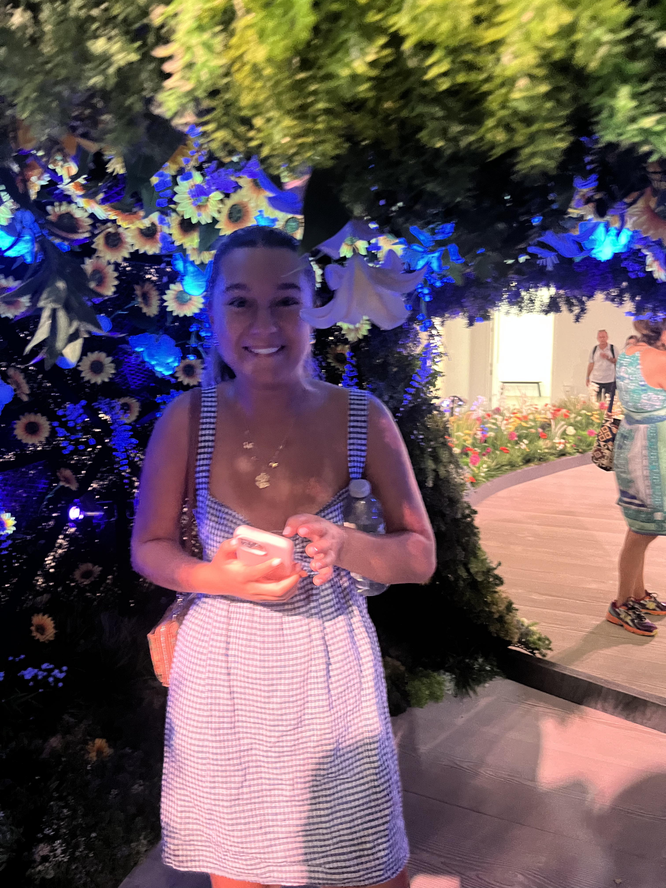

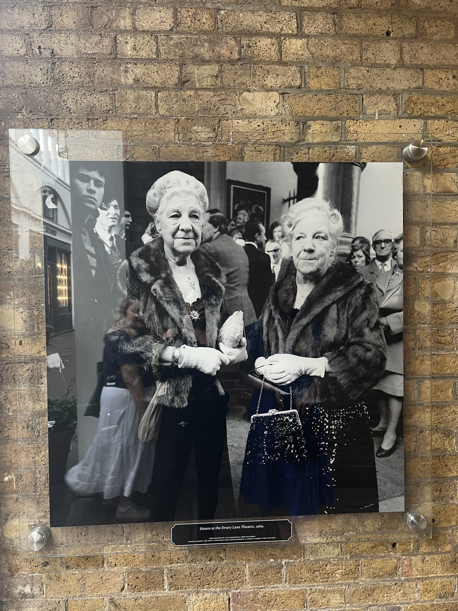
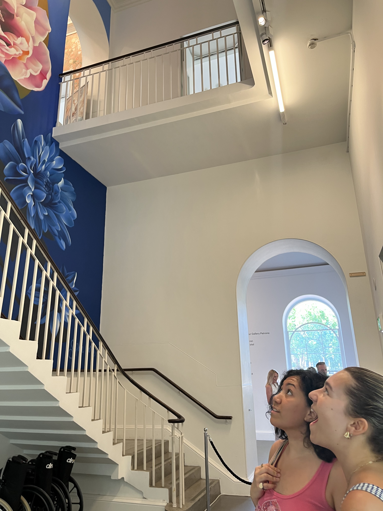
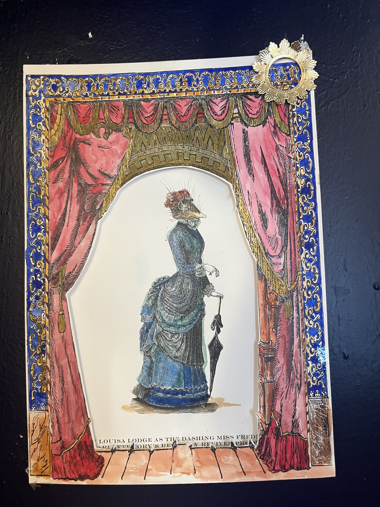
Togetherness
Your brain feels like it's in outer space, barely controlling your aching muscles and dehydrated organs, until you scroll through the blurry pictures from last night and know that it was all worth it. You drape yourself across the welcoming grass of Regent’s Park… or the real Prime Meridian… or wherever you guys have ended up, letting your eyelids sink down amidst the comfortable silence. Your assertion back in Durham that a few weeks isn’t enough time to know somebody through and through is still true, but it’s more than enough time to discover that you want to. Your full belly and 5-inch heels slow you down on the jog to the theater, but your newly dubbed “emotional support Russian” makes sure we don’t lose sight of the rest of our family dinner table a few yards ahead. Isn’t it beautiful to get to love people more than you had planned to?
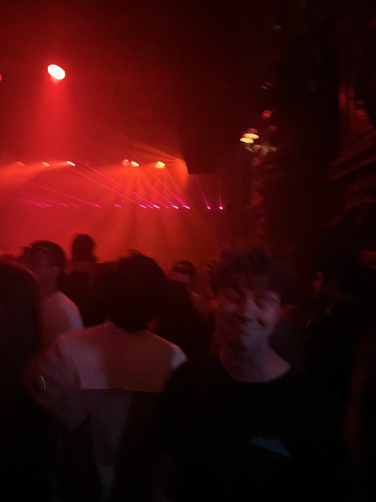
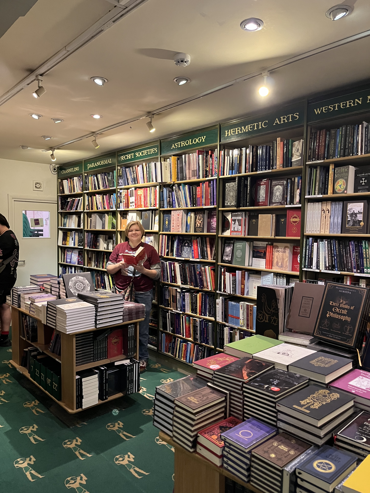

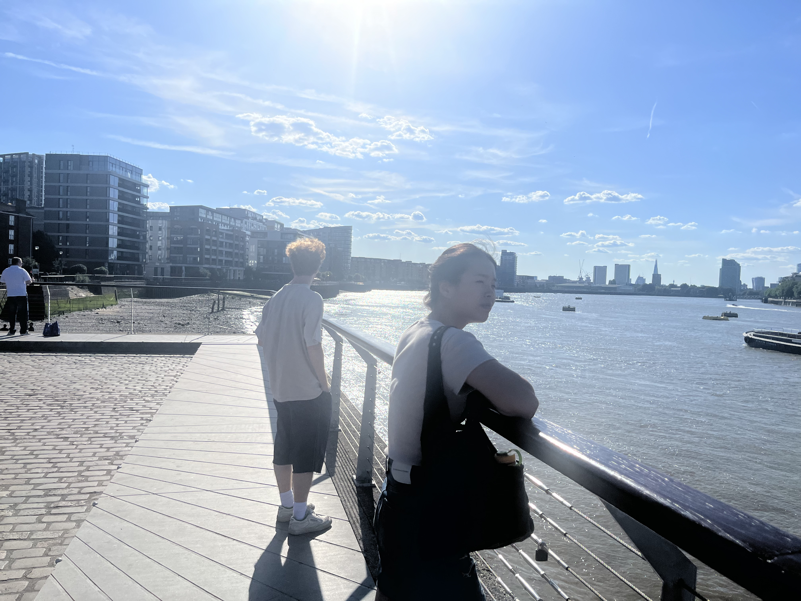
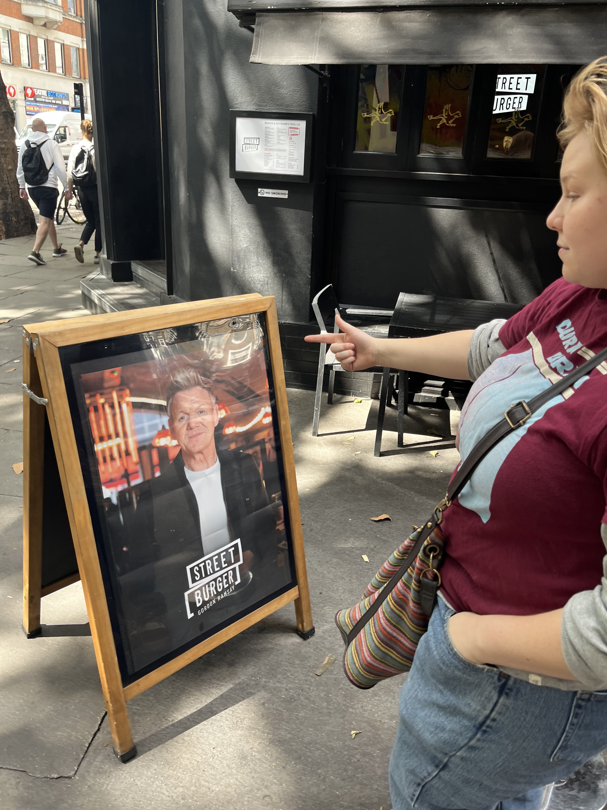
Loss
Idle moments bear a twelve-ton weight on your chest. It’s happened before, but never like this. You don’t have any flowery language to describe what’s happened. You’re not hurting for you, you’re hurting for them. Lying on your bed at 3AM, you type your best friend’s name under “Recipient” on the flower delivery website. You walk through Saatchi Gallery sending them pictures of all the lilies you find. Every day at 2pm you send them a good morning text. “I wish you were here,” means something different now. You beg yourself to stay as silent as possible when Satsuke screams, “She could die.” Every day, you notice more and more things that remind you of the people you love, and you tell them. You go back and capitalize the “h” in “Heaven.” Once the initial shock wears off, you feel so blessed to be somebody’s safe person. You make sure to leave the flight and hotel booking tabs open on your phone. You’ll be there to hug them. You’ll be there soon.
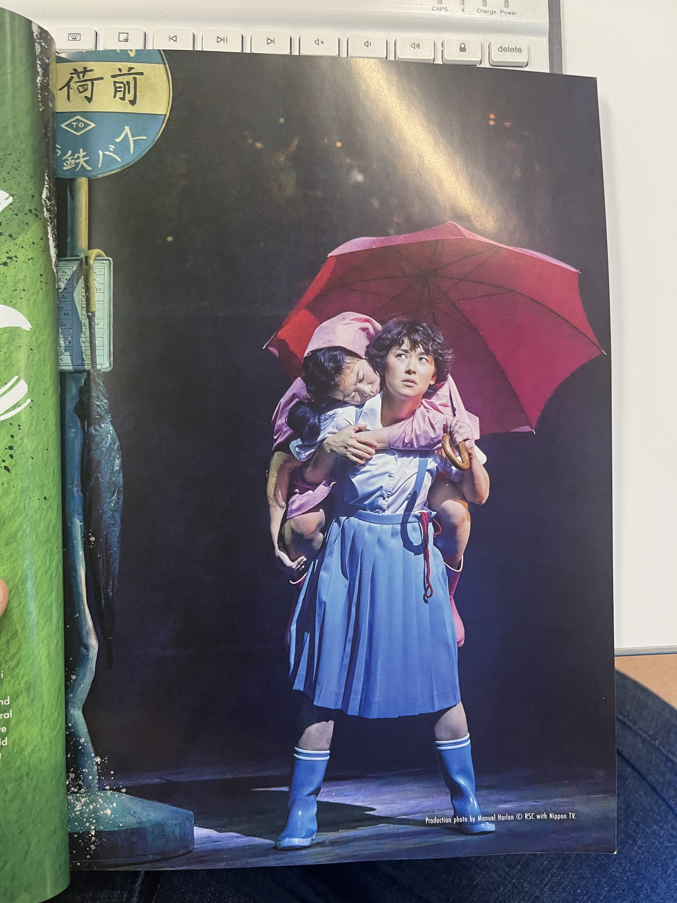
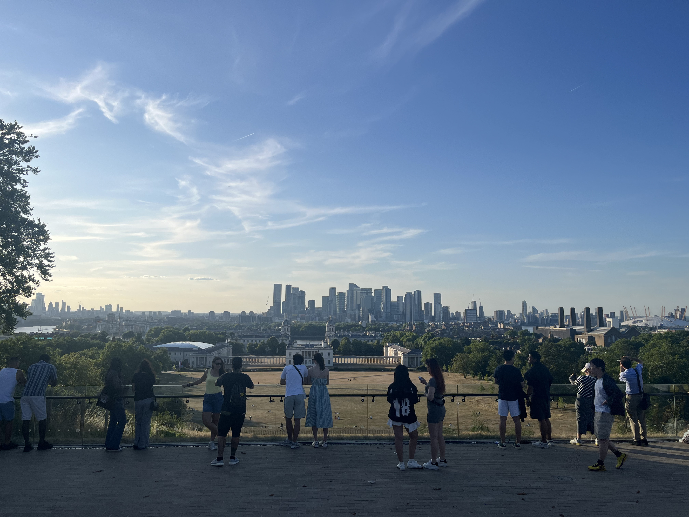
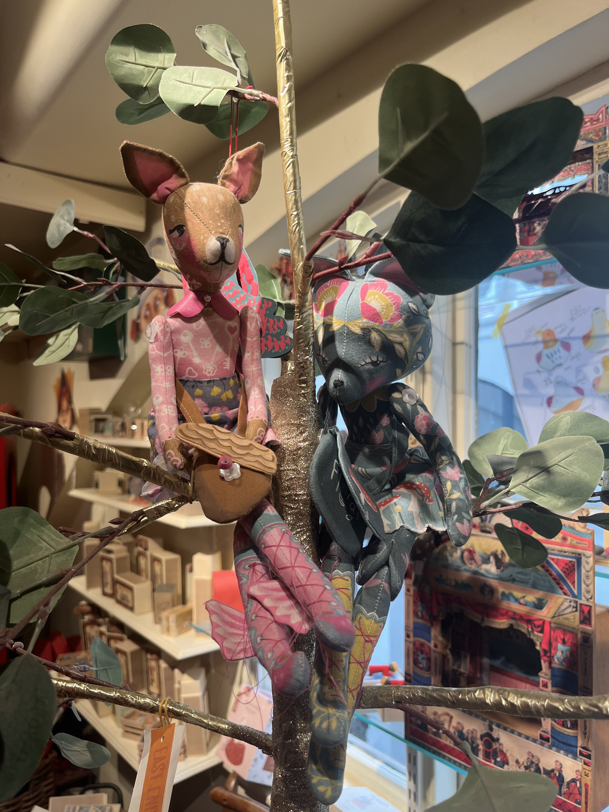
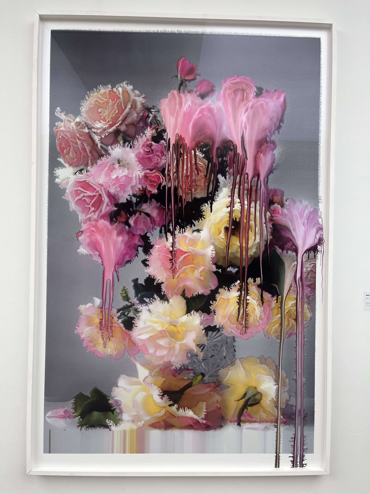